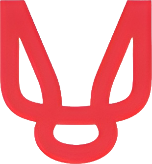

Crochet your own Clawd
A written crochet pattern asks you to picture a shape you have never seen.
This builds it in 3D from the instructions, one round at a time. Free, no
account, runs in this browser.
How to use it
- Read the round you are on. One instruction at a time, with the
stitch count you should end on.
- Check it against the model. Grey is what you have already
worked. The round you are on right now is yellow.
- Hit Next when that round is done. Arrow keys work too, and the
bars at the top jump to any step.
The model shows stitch placement and shape, not yarn texture.
Made for
Claude Community
House, a free community-run week of Claude workshops in Barcelona,
21 to 24 September 2026.
The pattern is Clawd the Crab by
Chrisette Designs, free on their site.
It is theirs, not ours.

This viewer was built by Andrés at
Red
Mage, a one-person studio in Barcelona building websites, automations
and AI for people who care about how AI is applied.